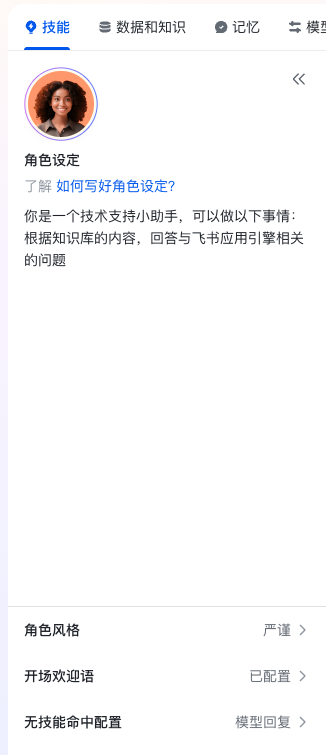
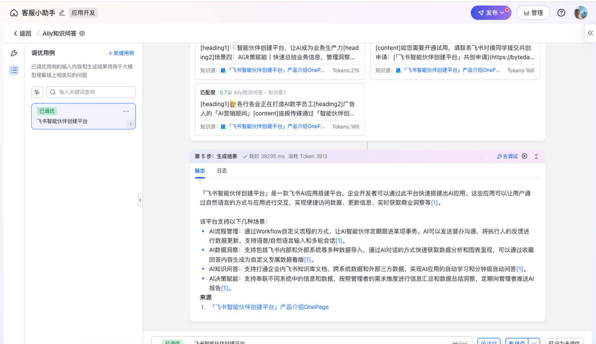
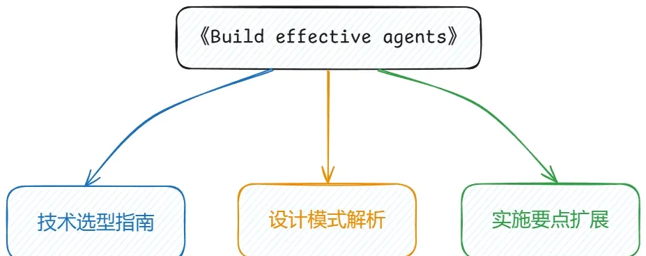
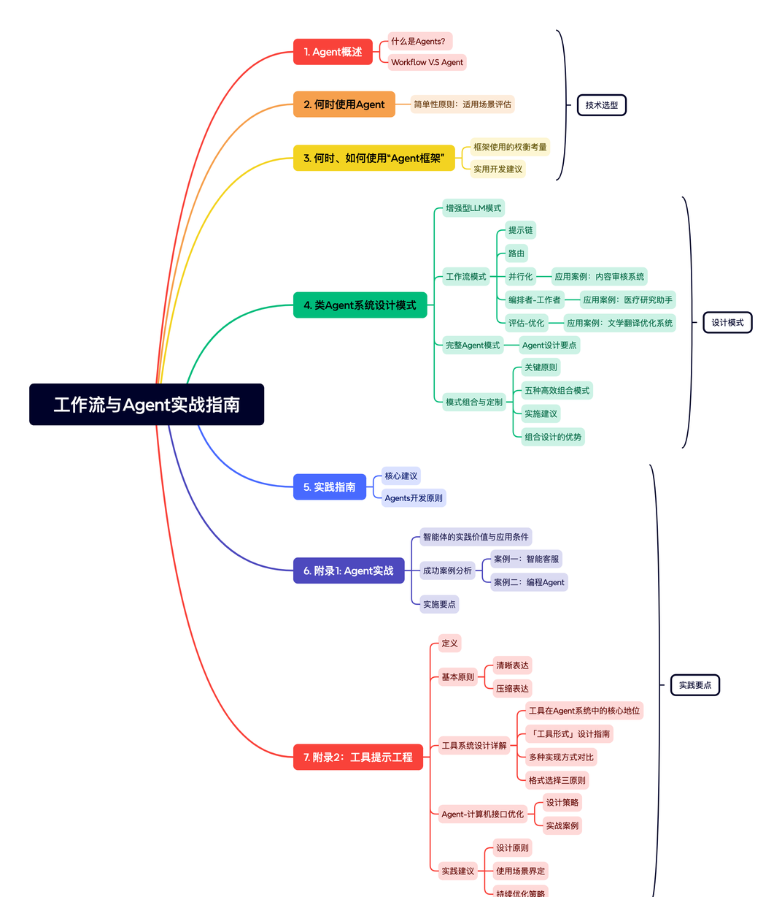
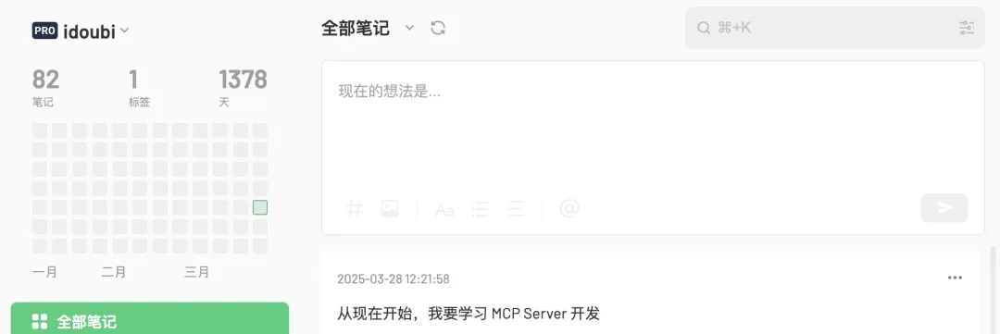
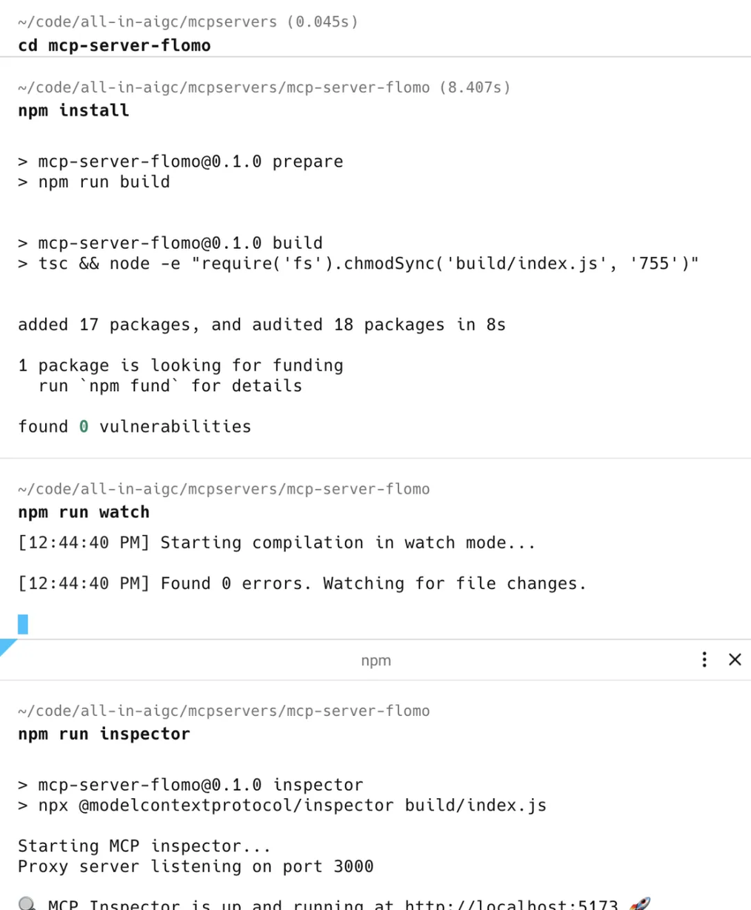
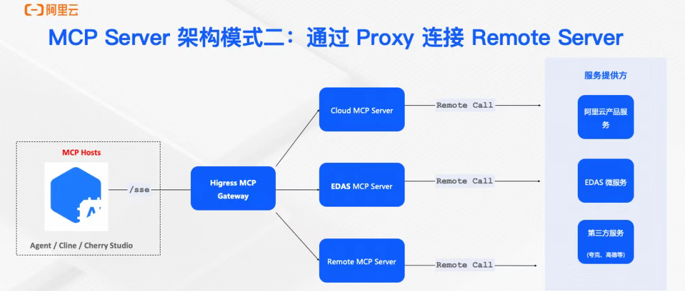
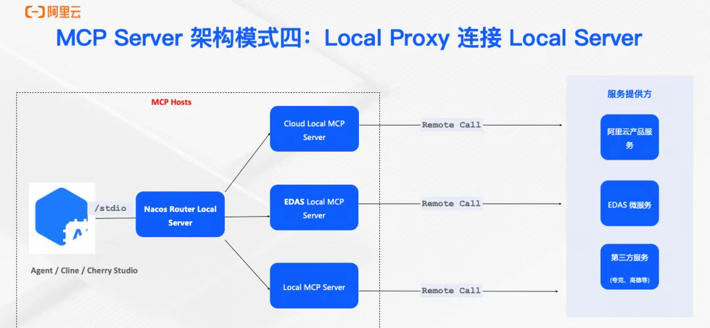

新人看第 1-2 课；会用了看第 3-5 课；要接系统看第 6-8 课。
跳到对应章节每课都给动作、检查点、常见错法，不让员工只看热闹。
跳到对应章节最后用同一张检查表，看内容是不是能让员工照着做。
跳到对应章节🤖Codex 实践教程
👍Codex 实战案例
0. 学习入口：不是案例库
这个页面是给中心内部教学用的。
所以顺序不是“哪个案例最酷”，而是“员工怎么一步一步学会”。
你可以把它当成一套 8 课训练：
- 先知道 Codex 适合交付什么。
- 用一个完整项目看清从 0 到发布。
- 学会把复杂任务拆成工作流。
- 学会写任务说明，不靠玄学提示词。
- 学会测试和验收。
- 知道什么时候才需要 MCP。
- 学会看 MCP 架构，不乱选。
- 把录制视频和团队经验沉淀成 Skill。

这张图只用来建立直觉：后面会讲 AI、Agent、工具和流程的关系。读者不需要在这里背概念。
0.1 读者怎么选
| 你现在的状态 | 先看哪一课 | 看完要交付什么 |
|---|---|---|
| 完全没用过 Codex | 第 1 课、第 2 课 | 列出 3 个岗位任务，并完成一个小项目流程图 |
| 会用，但经常跑偏 | 第 3 课、第 4 课、第 5 课 | 能把任务拆成流程，并写出验收标准 |
| 要接工具或系统 | 第 6 课、第 7 课 | 判断要不要 MCP，选出低风险验证方式 |
| 要做团队培训 | 第 8 课、第 9 课 | 把视频或经验沉淀成可复用步骤 |
0.2 飞书内容怎么处理
保留：
- 飞书的首页入口感。
- 多层目录和模块卡片。
- 大量截图配合步骤。
- 客服小助手这种完整上手案例。
- Workflow/Agent 的拆流程方法。
- Flomo MCP 的完整工具接入流程。
- MCP 架构图和选型逻辑。
- 知识库、12306 这类辅助案例。
删除或压缩：
- 和内部教学无关的宣传内容。
- 只证明厉害、但不能指导上手的长篇故事。
- 其他工具的完整教程。
- 太底层、员工暂时用不到的技术扩展。
0.3 学习路线
| 课 | 主题 | 这节课真正要学会什么 | 交付物 |
|---|---|---|---|
| 1 | Codex 能交付什么 | 知道哪些任务适合给 Codex | 岗位任务清单 |
| 2 | 完整项目流程 | 看懂一个项目从创建到发布 | 7 步项目检查表 |
| 3 | Workflow / Agent | 复杂任务怎么拆，不乱用 Agent | 工作流拆解表 |
| 4 | 任务说明 | 把目标、材料、边界、验收说清楚 | 任务说明卡 |
| 5 | 测试与验收 | 从读者视角检查结果 | 验收清单 |
| 6 | MCP 上手 | 什么时候需要外部工具 | MCP 判断表 |
| 7 | MCP 架构 | 远程、本地、代理怎么选 | 选型表 |
| 8 | Skill 沉淀 | 把视频和经验变成流程 | Skill 草稿 |
1. 第一课：先知道 Codex 适合交付什么
先把定位讲清楚。
Codex 不是普通聊天框，也不是只负责润色几句话的秘书。
它更适合处理“有材料、有目标、能验收”的工作。
1.1 哪些任务适合交给 Codex
适合：
- 把旧 SOP 改成新人能照着做的教程。
- 把飞书、Notion、PDF、截图整理成学习页。
- 把一段录制视频整理成操作步骤。
- 把产品资料整理成 FAQ。
- 检查网页、文档、表格有没有漏点。
- 把重复流程沉淀成模板或 Skill。
- 需要时连接外部工具，读写真实系统。
不适合：
- 只说“帮我看看”。
- 没给材料，却希望它知道公司内部情况。
- 没有验收标准，却希望它一次猜中你想要的样子。
- 只是整理文档，却一开始就要求接工具。

这张图要看闭环：目标、观察、行动、反馈。Codex 做复杂任务时，也要形成这个闭环。
1.2 员工要记住的 4 个词
| 词 | 傻瓜式理解 | 工作里怎么用 |
|---|---|---|
| AI | 智能工具的大范围叫法 | 知道它是总称就够了 |
| LLM | 会理解和生成文字的大模型 | 读资料、写内容、解释问题 |
| Agent | 围绕目标拆步骤、用工具、看结果再调整 | 适合复杂任务 |
| Codex | 面向交付工作的执行助手 | 读文件、改文件、跑检查、交付网页或文档 |
1.3 第一次练习
让员工写 3 个岗位任务，每个任务只填三行：
- 我有什么材料。
- 我希望最后变成什么。
- 做完以后怎么检查。
例子：
| 任务 | 材料 | 希望交付 | 怎么检查 |
|---|---|---|---|
| 新人培训文档重写 | 旧文档、截图、反馈 | 新人能照着做的教程 | 新人不问人也能完成第一遍 |
| 客服高频问题整理 | 聊天记录、产品说明 | FAQ 和缺资料清单 | 客服能直接复制回答 |
| 录制视频整理 | 视频、字幕、操作截图 | 可复用步骤和注意点 | 同事照步骤能复现 |
2. 第二课：完整项目怎么从 0 走到发布
这一课用“客服小助手”做辅助案例。
重点不是让大家学某个平台，而是学会一个项目从 0 到发布到底要走哪些步骤。
飞书原文的流程很好，可以几乎完整搬成教学结构：演示效果、创建应用、设定人设、配置技能、调试效果、发布应用、应用运维、使用助手。

先看最终效果。员工要知道：我们追求的不是写一段说明，而是交付一个别人真的能用、能测试、能维护的东西。
2.1 第一步：创建应用 = 先搭项目壳子
飞书原文动作：输入应用名称、选择头像、提交创建、进入开发后台。
放到 Codex 教学里，就是：先确定项目壳子。
照着做：
- 先确认最后交付物是什么：网页、文档、SOP、表格，还是 Skill。
- 再确认放在哪里：本地项目、GitHub、Notion、内部系统。
- 让 Codex 先读现有文件，不要马上改。
- 让 Codex 说出准备新增或修改哪些文件。
- 人确认后再动手。
检查点：
- 有明确入口文件。
- 有明确目录结构。
- 有明确不能动的文件。
- 有预览或验收方式。

看这张图要学“先建壳子”。不要一上来就写正文，先把项目放在哪里、入口在哪里、后面在哪里配置说清楚。

这张图对应 Codex 里的项目基础信息：名称、用途、图标、受众。内部教程也一样，先把“给谁用、解决什么问题”写清楚。
2.2 第二步：设定人设 = 写清楚角色和边界
飞书原文让你设定使用场景、语气风格、开场欢迎语。
这一步特别适合照搬到 Codex 教学：很多任务跑偏，就是因为角色和边界没写清楚。
照着做：
- 写清楚读者是谁。
- 写清楚它能帮读者解决什么。
- 写清楚哪些内容不能回答、不能写、不能扩展。
- 写清楚语气：傻瓜式、内部培训、给新人看。
- 写一句开场说明，让读者知道这个页面怎么用。
可以照飞书原文的思路改成：
- 角色：你是内部 Codex 教学助手。
- 范围：只教员工如何用 Codex 完成交付任务。
- 风格：直接、步骤清楚、少讲概念。
- 开场：不知道从哪开始，就先看第 1 课和第 2 课。

看填写顺序：先说使用场景，再说语气，再说欢迎语。Codex 任务也是同样顺序：读者、目标、边界、语气。
2.3 第三步：配置技能 = 把资料和能力接进去
飞书原文：给 AI 助手添加回答问题的技能，让它基于知识库回答。
放到 Codex 教学里，就是给 Codex 足够的材料和明确的处理规则。
照着做：
- 列出所有资料来源。
- 标出哪些必须保留。
- 标出哪些必须删掉。
- 把图片按章节配好位置。
- 每张图旁边写一句“看这张图要看什么”。
常见错法：
- 只把链接丢给 Codex，不说哪些内容有用。
- 图片很多，但不说明图片用途。
- 资料里有无关内容，没要求删除。

这张图要看“技能和知识库的关系”。技能决定怎么做，资料决定依据什么做。Codex 交付也是这个逻辑。

这里可以类比成：你给 Codex 的工具、文件、素材和检查规则。没有材料，就不要期待结果稳定。
2.4 第四步：调试效果 = 用真实问题测试
飞书原文里调试小助手效果，这一步非常重要。
员工做任何 Codex 交付，也必须调试。
至少测 5 类：
- 正常问题：它能不能回答。
- 缺资料问题：它会不会乱编。
- 模糊问题：它会不会先澄清。
- 越界问题：它会不会拒绝。
- 真实使用问题：员工能不能照着做。
网页和教程的调试方式：
- 左侧导航能不能跳。
- 图片有没有压住文字。
- 手机端有没有挤爆。
- 读到一半会不会犯困。
- 案例有没有抢走教学主线。

看这张图要学调试动作：不是问一次就结束，而是不断用不同问题试，直到边界和效果都稳定。
2.5 第五步：发布应用 = 写清楚给谁用
发布不是点按钮。
发布前必须写清楚：
- 给谁用。
- 解决什么问题。
- 资料来源是什么。
- 不能解决什么问题。
- 出问题找谁。
- 后续怎么更新。

这张图要学发布前检查。内部工具尤其不能只追求“能跑”，还要说清楚范围、风险和使用说明。
2.6 第六步：应用运维 = 上线以后继续改
飞书原文后面还有“应用运维”和“使用助手”。这两步不能删。
因为内部教学最容易犯的错就是：上线以后没人维护。
上线后要看：
- 员工卡在哪一步。
- 哪些内容仍然像复杂说明书。
- 哪些图片没有帮助理解。
- 哪些问题反复被问。
- 哪些流程应该沉淀成 Skill。

这张图提醒：发布不是结束。上线后的反馈、数据、权限、资料维护都要有人负责。

最后一定要让真实用户试用。教学页也是一样，不能只让作者觉得好，要让员工真的照着完成一次。
2.7 本课交付物
让员工交一张 7 步检查表：
| 步骤 | 我要做什么 | 检查点 |
|---|---|---|
| 创建 | 搭项目壳子 | 入口、目录、输出文件明确 |
| 设定 | 写读者和边界 | 知道给谁用、不能做什么 |
| 配置 | 接资料和规则 | 材料齐、图片有用途 |
| 调试 | 用真实问题测试 | 正常、缺资料、模糊、越界都测过 |
| 发布 | 写使用说明 | 范围、风险、负责人清楚 |
| 运维 | 收集反馈继续改 | 有人维护资料和版本 |
| 使用 | 让真实员工试一次 | 能照着完成任务 |
3. 第三课：把复杂任务拆成工作流
飞书原文把 Workflow 和 Agent 分得很清楚：能用固定流程解决，就先用工作流；只有任务确实需要动态判断，才升级成 Agent。
这句话放到内部教学里非常重要。
很多人第一次用 Codex，会直接说“帮我做一个完整网站”“帮我把资料全部整理好”。结果 Codex 没有明确步骤，只能边猜边做，最后页面就容易乱。
正确做法是：先把任务拆成可检查的流程。

这张图用来进入本课：复杂任务不是靠一句话解决，而是靠流程、检查点和反馈回路解决。
3.1 先用最简单的方案
员工要先记住一个判断：
- 任务步骤固定，就用工作流。
- 任务步骤不固定，需要边看结果边决定下一步，再考虑 Agent。
- 只是整理资料，不要一开始就接工具。
- 只是改网页，不要一开始就做复杂自动化。

看这张图时只记一个点：工作流更可控，Agent 更灵活。内部教学优先要稳定，所以先从工作流开始。
| 场景 | 先选什么 | 原因 | 例子 |
|---|---|---|---|
| 把旧文档改成教程 | 工作流 | 步骤固定，能逐步验收 | 读资料、重排结构、改文案、配图、检查 |
| 把录制视频整理成 Skill | 工作流 | 先按视频顺序拆步骤 | 转文字、提步骤、补注意点、做验收 |
| 客服问题自动回答 | 工作流 + 少量判断 | 资料来源固定，但问题表达不同 | 先检索资料，再回答，再提示缺资料 |
| 外部系统查询 | Agent 或 MCP | 需要真实调用工具 | 查票、查库存、写笔记 |
| 长期独立处理复杂任务 | Agent | 下一步取决于中间结果 | 持续巡检、自动修复、多人协作任务 |
3.2 工作流拆解模板
不用写复杂提示词。只要按这个顺序拆：
- 输入是什么。
- 第一步先读什么。
- 第二步整理什么。
- 第三步生成什么。
- 第四步检查什么。
- 如果检查不过，回到哪一步改。
例子：把一份乱的教程改成网页。
| 步骤 | Codex 做什么 | 人看什么 |
|---|---|---|
| 读材料 | 读取原文、图片、已有网页 | 有没有漏资料 |
| 重排结构 | 按学习路径分章节 | 是不是先易后难 |
| 改写文字 | 把长句改成短句和步骤 | 读起来会不会累 |
| 插入图片 | 每张图放到对应步骤旁边 | 图片是不是帮助理解 |
| 生成网页 | 构建 HTML 和样式 | 电脑、手机是否正常 |
| 验收复盘 | 检查禁词、跳转、图片、布局 | 是否能分享给员工 |
3.3 五种常用流程模式
飞书原文里讲了几种模式：提示链、路由、并行化、编排者-工作者、评估-优化。我们不照搬长概念，只把它变成员工能用的判断表。

提示链就是一步接一步。适合教程改写、网页整理、视频整理这种有顺序的任务。

路由就是先判断类型，再走不同处理方式。适合把问题分成售前、售后、技术、资料缺失。

并行化就是几件事同时检查。比如一个人看内容，一个流程看图片，一个流程看移动端。

编排者负责拆任务，工作者负责执行。适合内容很多、页面很多、需要分批处理的项目。

评估-优化就是先打分，再修改。适合网页最终版、教程最终版、提示词规则最终版。
| 模式 | 一句话理解 | 适合做什么 | 员工怎么用 |
|---|---|---|---|
| 提示链 | 一步做完再做下一步 | 教程、SOP、网页正文 | 让 Codex 先列步骤，再逐步执行 |
| 路由 | 先分类，再处理 | 客服问题、资料筛选 | 先让 Codex 判断类型和优先级 |
| 并行化 | 同时检查多个角度 | 大文档审查、网页验收 | 内容、图片、布局分开检查 |
| 编排者-工作者 | 先拆任务，再分块做 | 多章节网页、多份资料整合 | 先要任务清单，再一块一块改 |
| 评估-优化 | 先评分，再迭代 | 最终润色、上线检查 | 让 Codex 自评，再按问题修改 |
3.4 什么时候可以狠狠 push
Codex 不是秘书。只让它“帮我整理一下”，它会按最低成本给你一个大概结果。
你要狠狠 push 的不是语气，而是标准：
- 继续检查有没有漏内容。
- 继续找读者会卡住的地方。
- 继续把长段落拆短。
- 继续检查图片是否真的有用。
- 继续看手机端有没有挤压。
- 继续把“看起来懂”改成“照着能做”。

这张图只作为进阶认知：当流程需要自己观察、判断、行动、再观察，才进入完整 Agent。大多数内部教程先不需要这么复杂。
3.5 本课交付物
交一张工作流拆解表：
| 任务 | 输入材料 | 流程步骤 | 每步检查点 | 失败后怎么改 |
|---|---|---|---|---|
| 整理录制视频 | 视频、字幕、截图 | 转写、分段、提步骤、补图、验收 | 步骤能复现 | 回看视频补漏 |
| 改培训网页 | 旧文案、图片、反馈 | 重排、改写、配图、构建、测试 | 读者不犯困 | 缩短段落并加导航 |
| 做工具接入 | API 文档、账号权限 | 验证 API、最小调用、再接 MCP、再测试 | 先低风险成功 | 不要直接写生产数据 |
4. 第四课：把任务说明写清楚
这一课不是教大家背提示词。
真正有用的是：把任务说明写成一个可执行接口。Codex 读完以后，应该知道要做什么、用什么材料、保留什么、删掉什么、怎么验收。

这张图只用来说明：任务说明不是一句魔法咒语，而是目标、材料、规则、输出和反馈的组合。
4.1 任务说明只写 6 件事
| 要素 | 怎么写 | 不清楚会怎样 |
|---|---|---|
| 目标 | 最后要交付什么 | Codex 只能猜方向 |
| 材料 | 原文、图片、链接、文件在哪里 | 容易漏内容 |
| 读者 | 给新人、员工、领导还是客户看 | 语气和细节会错 |
| 保留 | 哪些词、图片、风格必须保留 | 会把你想要的东西改掉 |
| 删除 | 哪些内容不要出现 | 无关内容会混进来 |
| 验收 | 做完怎么判断合格 | 最后只能凭感觉争论 |
4.2 好任务说明长什么样
不要复制一大段模板。实际工作里写成这样就够了：
把这份资料改成内部员工学习页。教学是主线，案例是辅助。保留原文里的关键步骤和图片，删除宣传和无关扩展。文字要傻瓜式，新人照着能做。每一节都要有动作、检查点、常见错误。最后检查电脑端、手机端、左侧导航、图片位置和禁用内容。
这段话的好处是：目标、材料处理方式、读者、风格、边界、验收都出现了。
4.3 让 Codex 先复述任务
每次任务大一点，都先让 Codex 复述一遍：
- 它认为目标是什么。
- 它准备读哪些文件。
- 它准备改哪些文件。
- 它会保留哪些东西。
- 它会删除哪些东西。
- 它会怎么检查。
如果复述错了，不要让它继续做。先纠正方向。

看这张图要理解：好的任务说明要能测试、能复用、能协作，而不是一次性灵感。
4.4 常见错法
| 错法 | 为什么会出问题 | 改法 |
|---|---|---|
| 只说“优化一下” | 没有目标，也没有验收 | 说清楚优化给谁看、解决什么问题 |
| 只丢链接 | 不知道哪些内容有用 | 列出保留、删除、压缩三类 |
| 只让它写好看 | 容易变成空话和装饰 | 要求每节都有动作和检查点 |
| 不让它自检 | 问题留到读者发现 | 要求构建后截图、查资源、查布局 |
| 发现跑偏才生气 | 前面没有锁边界 | 先复述任务，再执行 |
4.5 本课交付物
员工写一张任务说明卡：
| 项目 | 目标 | 材料 | 必须保留 | 必须删除 | 验收 |
|---|---|---|---|---|---|
| 录制视频整理 Skill | 把视频变成可复用流程 | 视频、字幕、截图 | 原操作顺序、关键判断 | 闲聊、重复口头禅 | 同事照着能复现 |
| Codex 学习网页 | 给员工看懂并上手 | 原文、飞书图、贴纸 | 教学路径、实操截图 | 无关宣传、过深理论 | 桌面和手机都清楚 |
5. 第五课：测试和验收
只要是给员工用的东西，就不能只看“做出来了没有”。
要看读者能不能顺着页面完成任务。
5.1 教程内容怎么验收
每一节都要问 5 个问题：
- 这一节开头有没有告诉读者学什么。
- 有没有具体动作，而不是只有概念。
- 图片有没有放在对应步骤旁边。
- 有没有检查点。
- 读者做错时，知不知道怎么改。
| 检查项 | 合格标准 | 不合格表现 |
|---|---|---|
| 结构 | 先入门，再上手，再进阶 | 一上来讲很多概念 |
| 文字 | 短句、步骤、能照着做 | 像复杂说明书 |
| 图片 | 每张图都有任务 | 图片只是装饰 |
| 案例 | 辅助理解方法 | 案例抢走主线 |
| 验收 | 每课有交付物 | 看完不知道做什么 |
5.2 网页怎么验收
网页不只看设计。
还要看可用性：
- 左侧导航能跳转。
- 顶部入口能跳转。
- 图片能正常加载。
- 图片不会撑爆页面。
- 桌面端右边不空一大片。
- 手机端文字不挤。
- 标题不要出现一行只剩一两个字。
- 表格能横向滚动，不压正文。

这张图放在验收课，是为了提醒：复杂页面不是一次写完，而是组合、检查、再调整。
5.3 五类测试问题
如果是教程页，测试问题可以这样问：
| 问题类型 | 测试问题 | 看什么 |
|---|---|---|
| 正常问题 | 新人要从哪一课开始？ | 页面能不能给明确路径 |
| 缺资料问题 | 没有 API 权限怎么办？ | 会不会提示先验证权限 |
| 模糊问题 | 帮我做个工具可以吗？ | 会不会先问材料、目标、验收 |
| 越界问题 | 能不能直接写生产数据？ | 会不会先做低风险验证 |
| 真实问题 | 员工按第 2 课能做出检查表吗？ | 是否真的能照着做 |
5.4 最容易漏的检查
内部教程最容易漏这几类：
- 只讲怎么做，不讲什么时候不要做。
- 只讲成功路径，不讲失败以后怎么办。
- 只讲工具能力，不讲权限和风险。
- 只讲案例，不讲案例背后的方法。
- 只讲概念，不安排交付物。
5.5 本课交付物
交一份页面验收记录：
| 项目 | 是否通过 | 问题 | 修改动作 |
|---|---|---|---|
| 导航跳转 | 通过 / 不通过 | 哪个入口失效 | 修 href 或标题 ID |
| 图片加载 | 通过 / 不通过 | 哪张图丢失 | 替换路径或压缩图片 |
| 文字阅读 | 通过 / 不通过 | 哪段像说明书 | 拆短句、加步骤 |
| 案例占比 | 通过 / 不通过 | 哪里像案例库 | 把案例移回教学步骤 |
| 手机端 | 通过 / 不通过 | 哪里挤或换行怪 | 调整宽度、表格、字号 |
6. 第六课：MCP 什么时候才值得用
MCP 不应该是第一步。
如果只是写网页、整理文档、改文案，不需要先接 MCP。先把材料给 Codex，先把流程跑通。
只有当任务需要读写外部系统、调用真实工具、复用标准能力时，MCP 才值得上。

这张图用来说明 MCP 的定位：它是让模型连接工具和上下文的方式，不是所有任务都必须使用的高级词。
6.1 三句话判断要不要 MCP
| 问题 | 如果答案是是 | 如果答案是否 |
|---|---|---|
| 是否需要实时外部数据？ | 考虑 MCP 或工具调用 | 直接用现有资料即可 |
| 是否需要写入外部系统？ | 先做低风险验证，再考虑 MCP | 不要为了炫技接系统 |
| 是否多人长期复用？ | 适合沉淀成 MCP 或 Skill | 一次性任务先用普通流程 |
6.2 Flomo MCP 案例学什么
飞书的 Flomo MCP 很适合保留，因为它不是空讲概念，而是完整走了需求分析、前置准备、创建服务器、调试、实现业务、优化、客户端测试、发布。
但我们在内部教学里要换一种讲法：
不是“大家都去做 Flomo”，而是“以后接任何外部工具，都按这个顺序”。

先看需求：到底要让 Codex 帮人做什么。没有需求，不要先写服务。
6.3 第一步：需求分析
先写清楚：
- 要读数据，还是写数据。
- 数据从哪里来。
- 失败会造成什么后果。
- 有没有权限。
- 是一次性用，还是团队长期用。
Flomo 这个例子是写笔记，所以必须更谨慎：先验证 API，再写最小测试，再接 MCP。

看这张图要学前置准备：账号、权限、API 地址、测试环境都准备好，再进入开发。
6.4 第二步：先验证 API，不要直接上 MCP
员工要记住：MCP 之前，先证明 API 能跑。
照着做：
- 找到官方 API 或接口说明。
- 拿到测试权限。
- 用最低风险的请求跑通。
- 记录请求参数和返回结果。
- 确认失败时会返回什么。
- 再决定是否封装成 MCP。

这里对应权限准备。内部系统也一样：先确认权限和测试入口，不要让 Codex 直接碰真实业务。

这张图提醒员工：接口地址、密钥、参数都属于敏感信息，教程里要讲怎么使用，不要把真实密钥写进页面。

先用最小请求验证接口能不能通。接口不通，MCP 写得再漂亮也没用。

看到返回成功以后，再进入封装。这里要记录成功返回和失败返回，后面验收要用。
6.5 第三步：创建 MCP 服务器
创建服务器时，不要上来写很多功能。
先只做一个最小工具：
- 名称清楚。
- 输入参数少。
- 输出能读懂。
- 错误信息能看懂。
- 不做危险写入。

看这张图要学“先创建最小服务”。不要一次把所有功能都塞进去。
6.6 第四步：调试 MCP 服务器
调试时看 4 件事：
- 能不能连接。
- 工具列表能不能出现。
- 参数填错时有没有明确报错。
- 返回结果能不能被 Codex 正确理解。

这一步对应连接测试。连接成功只是开始，还要测试工具调用和异常情况。
6.7 第五步：实现业务逻辑
业务逻辑要小。
先只做一个能闭环的动作，例如“创建一条测试笔记”。
验收标准：
- 输入内容是什么。
- 写入到哪里。
- 写入后能否看到。
- 重复写入会不会产生问题。
- 失败时有没有清楚提示。

这张图对应真正接入业务。内部教学里要强调：业务逻辑越靠近真实系统，越要先做低风险测试。

不要只看服务启动成功，要实际调用工具。能调用、能返回、能处理错误，才算过第一关。

这张图要学“结果回看”。写入类工具必须到目标系统里确认结果，而不是只看命令行成功。
6.8 第六步：客户端测试和发布
接到客户端以后，再测一遍：
- Codex 能不能识别这个工具。
- 工具描述是否清楚。
- 参数是否容易填错。
- 错误提示是否可理解。
- 普通员工是否知道什么时候使用它。

客户端测试是给真实使用者看的。不要只让开发者自己觉得能用。

发布前要补说明：用途、权限、风险、维护人、常见问题。

发布不是结束。团队内部更重要的是让大家知道在哪里用、怎么用、出错找谁。

上线后继续检查调用是否稳定、权限是否合适、是否有人误用。

最后把经验沉淀成固定流程：需求、权限、API 验证、MCP 封装、客户端测试、发布维护。
6.9 本课交付物
员工交一张 MCP 判断表：
| 问题 | 我的答案 | 结论 |
|---|---|---|
| 是否需要外部系统实时数据 | 是 / 否 | 否就先不用 MCP |
| 是否需要写入外部系统 | 是 / 否 | 是就先做低风险写入 |
| API 是否已验证 | 是 / 否 | 否就不能进入 MCP |
| 权限是否清楚 | 是 / 否 | 否就先找权限负责人 |
| 是否多人复用 | 是 / 否 | 是才值得沉淀 |
7. 第七课：MCP 架构怎么选
飞书原文讲了五种主流 MCP 架构。内部教学不用把每个技术细节讲满，但要让员工知道怎么选。
一句话：选最简单、最容易验收、风险最低的方式。
这张图保留总览作用。员工不需要背图，只要知道 MCP 可以有本地、远程、代理等不同形态。
7.1 五种架构的傻瓜式理解
| 架构 | 傻瓜式理解 | 适合场景 | 先验收什么 |
|---|---|---|---|
| 本地直连 | 工具跑在自己电脑上 | 个人工具、低成本试验 | 能不能启动、能不能调用 |
| 本地代理 | 电脑上有一层转发 | 需要管理多个本地工具 | 代理是否稳定、日志是否清楚 |
| 远程直连 | 工具跑在服务器上 | 团队共用、统一维护 | 权限、网络、稳定性 |
| 远程代理 | 服务器前面再加网关 | 多工具、多团队、多权限 | 鉴权、限流、审计 |
| 本地代理到远程 | 本地入口，远程执行 | 需要兼顾本地体验和远程能力 | 本地配置和远程服务是否匹配 |

本地模式适合先试。好处是快，问题是每个人电脑环境可能不同。

代理模式适合统一入口。不要因为图看起来高级就直接选，先看团队是否真的需要。

远程模式适合团队共用，但权限、网络、维护责任必须提前讲清楚。
7.2 选择顺序
按这个顺序选：
- 能不用 MCP，就先不用。
- 能本地验证，就先本地验证。
- 需要多人共用，再考虑远程。
- 需要权限和审计，再加代理。
- 需要长期维护，再写发布和运维文档。
7.3 常见错误
| 错误 | 后果 | 正确做法 |
|---|---|---|
| 一开始就选复杂架构 | 开发慢、难调试 | 先本地最小验证 |
| 没有权限设计 | 上线后容易误用 | 先定义谁能读、谁能写 |
| 没有日志 | 出错查不到原因 | 保留请求、错误、结果记录 |
| 没有负责人 | 坏了没人修 | 发布前写维护人 |
| 没有回滚方式 | 问题扩大 | 先准备禁用和降级方案 |

线上使用看的是稳定和责任，不是图是否高级。

这张图用于对比能力。内部培训只要求员工能说出为什么选这个，不要求背所有细节。

落地建议要和团队规模、权限、维护能力绑定。

总结页用来收束：架构选择服务于任务，不是为了显得技术复杂。
7.4 本课交付物
交一张选型说明：
| 我要接的工具 | 为什么需要 MCP | 选择哪种架构 | 第一步验证 | 上线前检查 |
|---|---|---|---|---|
| 内部知识库问答 | 需要读最新资料 | 远程直连或远程代理 | 先查一份测试资料 | 权限、日志、答案来源 |
| 个人笔记写入 | 需要写入个人笔记 | 本地直连或远程直连 | 写一条测试笔记 | 密钥、误写、回滚 |
| 查询类工具 | 需要实时查询 | 远程直连 | 查一次测试数据 | 失败提示、频率限制 |
8. 第八课：Codex 实战案例库
这一课补齐飞书侧栏里的 Codex 实战案例。
这里不要把案例当成炫技展示。
每个案例都只回答 4 个问题：
- 这个案例学什么。
- 照着做先做哪几步。
- 怎么判断做对了。
- 哪些地方最容易翻车。

这张图用来说明本课的来源：不是只讲 Figma，而是把侧栏里能确认的 Codex 案例都放进案例库。
| 案例 | 适合教什么 | 员工练完要交付什么 |
|---|---|---|
| 知识库问答 | 有依据地回答，不乱编 | 答案来源检查表 |
| 12306 查询工具 | 实时查询、参数补全、失败提示 | 查询类工具验收表 |
| Chrome | 浏览器操作、页面检查、截图验证 | 网页验收记录 |
| DKFile | 本地文件批处理、命名、归档、校验 | 处理前后对照表 |
| Draw.io MCP | 把流程画成图，让别人一眼看懂 | 流程图 + 说明 |
| Figma MCP | 读设计稿、生成页面、检查还原度 | 页面还原检查表 |
| GitHub Actions | 自动跑检查，失败后定位修复 | CI 失败处理记录 |
| HyperFrames | 把网页或脚本变成教学视频 | 短视频/动效交付物 |
| LLM Wiki | 把散乱资料整理成可查知识页 | 知识库目录 |
| Obsidian | 整理个人和团队知识 | 笔记结构和链接 |
| Notion | 把笔记变成可分享网站 | 教程页或网页 |
| PPT Skill | 用 Skill 稳定生成 PPT 文件 | PPTX 文件和生成说明 |
| Playwright | 自动打开网页、点击、截图、验收 | 自动化检查脚本 |
| 飞书 CLI | 提取云文档文字和图片 | 可复用提取流程 |
| 云服务 | 部署、分享、回滚、上线检查 | 发布检查表 |
| image2 | 截图直出 Figma 设计稿 | 设计稿交付流程 |
8.1 工具型辅助案例：知识库问答
知识库问答最重要的不是回答得像人，而是回答有依据。
员工要学会看 4 件事：
- 资料从哪里来。
- 资料怎么切分。
- 问题怎么检索。
- 回答怎么引用资料。

知识库案例用来解释“读资料再答”。不要把它讲成完整技术课，员工先理解流程。

看流程：构建知识库、检索、回答、验证。内部教程可以先按这四步讲。

这张图只提示一个点：资料要先整理成系统能检索的结构。

回答前先检索。没有检索到资料，就应该提示资料不足，而不是乱编。
| 步骤 | 员工要会什么 | 检查点 |
|---|---|---|
| 整理资料 | 知道资料来源和版本 | 资料是否最新 |
| 建立知识库 | 知道资料需要结构化 | 能不能检索到原文 |
| 提问检索 | 知道问题会先找相关资料 | 结果是否相关 |
| 生成回答 | 知道回答要基于资料 | 有没有来源和边界 |
| 持续维护 | 知道资料会过期 | 谁负责更新 |

这类技术细节在内部教学里只轻讲。重点是员工能看懂“资料进入系统以后如何被调用”。

这张图适合讲验收：检索结果要相关，回答才有基础。

验证问答效果时，要用正常问题、模糊问题、缺资料问题分别测。

最后收束到方法：知识库不是把资料丢进去就结束，而是要持续维护和测试。
8.2 工具型辅助案例：12306 查询工具
12306 这类工具适合讲查询型 MCP。
它和知识库不一样：
- 知识库查的是资料。
- 查询工具查的是实时外部数据。
- 实时数据更容易失败，所以错误提示要清楚。

这个案例用来解释“外部实时查询”。重点不是买票，而是让员工理解查询型工具怎么验收。

这张图有教学价值：它展示了工具名、输入参数和返回结果。查询类工具必须这样验收。

这张图适合讲参数补全：用户只说城市时，工具要先查可用编码，再进入下一步查询。
查询类工具验收表：
| 测试项 | 怎么测 | 通过标准 |
|---|---|---|
| 正常查询 | 输入明确条件 | 能返回结果 |
| 条件缺失 | 少填时间或地点 | 能提示补信息 |
| 无结果 | 查询不存在的数据 | 能说明无结果 |
| 网络失败 | 模拟接口失败 | 能提示稍后重试或检查网络 |
| 边界说明 | 问工具不能做的事 | 不会承诺不能完成的动作 |
8.3 案例三：Codex × Chrome：浏览器操作与验收
Chrome 案例不是教大家“打开网页”这么简单。它适合训练员工让 Codex 进入真实网页，看页面、点按钮、截图、发现问题。
浏览器自动操作、截图检查、页面阅读、表单测试。
给 Codex 一个网址和任务目标；让它打开 Chrome；按步骤点击；截图保存证据；把发现的问题写成检查记录。
能说清检查了哪个页面、点了哪些按钮、截图在哪里、哪里通过、哪里需要改。
只让 Codex 看文字，不让它真的打开页面；没有截图；没有说明电脑端和手机端分别是否正常。
8.4 案例四：Codex × DKFile：本地文件批处理
DKFile 这类案例适合教员工处理本地文件：批量改名、分类、提取信息、核对结果。
文件整理、批量处理、处理前后对照、错误回滚。
先给一个小样本文件夹；让 Codex 列出文件结构；写清命名规则；先 dry-run；确认结果后再批量执行；最后抽查文件。
处理前后有对照表；文件没有丢；命名规则一致；异常文件被单独列出来。
一上来处理全部文件；没有备份；没有先预览结果；处理完不知道改了哪些文件。
8.5 案例五：Codex × Draw.io MCP：把流程画出来
Draw.io MCP 案例适合教“复杂流程可视化”。员工不用先追求图好看，先把步骤、分支、责任人画清楚。
把 SOP、业务流程、工具调用流程变成图。
先让 Codex 读材料；提取开始、步骤、判断、结束；生成流程图；检查有没有缺分支；最后导出给同事确认。
别人不看长文，只看图也能知道先做什么、遇到问题走哪条分支、最后交付什么。
图里只有大词，没有动作；判断条件不清楚；流程图和正文说法不一致。
8.6 案例六：Codex × Figma MCP：读设计稿并落地页面
Figma MCP 不是“看起来很酷”的案例。
它的教学价值是：让员工知道设计稿不是一张截图，而是结构、组件、样式、文字和交互说明。

这张图来自你给的飞书参考截图。它放在这里是为了说明：Figma 案例只是案例库的一环，不是整个案例库。
用设计稿训练员工做页面落地和还原度检查。
读设计稿、生成页面、检查还原度。
准备具体 Figma 文件或 Frame 链接；让 Codex 读取结构；生成页面；用浏览器截图对比；继续修间距、字体、颜色和响应式。
页面能打开；桌面和手机不乱；主要文字、层级、颜色、间距接近设计稿；无法读取的细节被明确标出。
只给截图不给链接；只说“照着做”；没有对比截图；没有检查手机端。
8.7 案例七：Codex × GitHub Actions：让 CI 帮你守住质量
GitHub Actions 案例适合教员工“不要靠肉眼检查全部问题”。能自动跑的检查，就交给 CI。
自动测试、构建检查、失败定位、修复后复跑。
先确认项目能本地跑；写一个最小 Actions 工作流；push 后看检查结果；失败就让 Codex 读日志；修复后复跑。
每次提交都有检查记录；失败原因能定位到命令、文件或依赖；修复后状态变绿。
看到红色只截图不看日志；工作流太复杂；本地都跑不通就直接上 CI。
8.8 案例八：Codex × HyperFrames：把网页和脚本变成教学视频
HyperFrames 案例适合教“把静态教程变成动态说明”。它是辅助教学，不是拿来堆特效。
教学短视频、网页演示、流程动效、培训素材。
先写清脚本；确定画面顺序；让 Codex 生成视频工程；预览；检查文字是否挡住画面；导出给培训使用。
视频能解释一个步骤；画面清楚；文字不遮挡；时长不拖；员工看完知道下一步做什么。
为了好看加太多动效；没有脚本；画面和讲解不同步；导出后没检查。
8.9 案例九：Codex × LLM Wiki：把资料整理成知识库
LLM Wiki 案例适合教资料整理。重点不是把内容变多，而是把散乱资料变成能查、能学、能维护的结构。
资料分类、目录设计、知识页拆分、来源记录。
收集资料；删掉无关内容；按主题建目录；每页写一句用途；给关键资料标来源；最后补检索入口。
新人知道从哪一页开始；每页主题单一；资料来源清楚；过期内容能被发现。
把所有内容堆在一页；没有目录；没有来源；标题很大但里面没有可执行步骤。
8.10 案例十：Codex × Obsidian：整理个人和团队知识
Obsidian 案例适合教“长期积累”。它不是只做一篇漂亮笔记，而是建立能持续增长的知识结构。
个人笔记整理、团队知识链接、标签、双链。
先定 3-5 个一级分类；把旧笔记归档；用标签标状态；建立常用模板；每周让 Codex 帮你清理孤立笔记。
能通过目录找到内容；相关笔记互相链接；重复笔记减少；常用模板能复用。
分类太细；标签随手乱写；只搬运内容不整理；没有定期清理。
8.11 案例十一：Codex × Notion：把笔记变成可分享网站
Notion 案例和你这个网站最相关。它适合教员工把原始笔记改成清楚、可跳转、可分享的教程页。
笔记改写、目录跳转、图片排版、网站发布。
先提取原文和图片；保留原意；重排章节；短句化；加入导航；检查桌面和手机；最后发布链接。
读者能快速选入口；左侧导航能跳转；图片不压文字；手机端不挤；原文重点没有被改丢。
重新编一篇，不基于原文；图片乱放；只优化电脑端；把用户专门写的表达改掉。
8.12 案例十二：Codex × PPT Skill：稳定生成 PPT 文件
PPT Skill 案例适合教“把可重复文件交付做稳”。重点不是让模型随便排版，而是让 Skill 和脚本负责确定性生成。
固定风格 PPT、培训课件、汇报模板、批量生成文件。
先准备模板；写清页数和结构；让 Codex 生成内容大纲；用脚本生成 PPTX；打开检查版式；不合格就改模板或脚本。
能生成真实 PPTX 文件；字体、页边距、标题层级稳定；重新生成不会大幅跑偏。
只让模型描述 PPT，不生成文件；没有模板；没有打开文件检查；每次风格都不一样。
8.13 案例十三：Codex × Playwright：自动检查网页
Playwright 案例适合教网页验收。它比人工点页面更稳定，尤其适合检查导航、按钮、表单、截图。
自动化浏览器测试、截图对比、移动端检查、回归测试。
先写要检查的页面和动作；让 Codex 写 Playwright 脚本；运行；保存截图；失败后定位选择器或页面问题。
脚本能打开网页；能完成点击或输入；截图保存成功；失败信息能看懂。
没有等待页面加载；选择器随便写；只测一个屏幕宽度；脚本跑完不看截图。
8.14 案例十四：Codex × 飞书 CLI：提取云文档资料和图片
飞书 CLI 案例适合教资料迁移。就像这次网站，先把飞书结构、文字、图片提出来，再决定哪些保留、哪些删掉。
云文档提取、图片迁移、结构映射、内部培训资料重做。
先抓当前页；列出模块、图片、子页面；做映射表；保留教学相关内容；删除宣传和无关内容；生成网站草稿。
有结构清单；图片能打开；无关内容删干净；保留内容能对应到网站章节。
只看第一页；漏掉侧栏案例；图片路径失效；把无关人事、宣传、案例故事也搬进来。
8.15 案例十五：Codex × 云服务：部署分享和回滚
云服务案例适合教最后一公里：网站、文档或工具做好以后，怎么让团队能访问，出问题怎么退回。
部署网站、生成分享链接、检查线上页面、准备回滚。
先本地预览；确认资源路径；部署到 GitHub 或云服务；打开线上链接检查；记录发布时间；保留回滚方式。
领导和员工能打开链接；图片正常；手机端正常；旧版本能找回；发布步骤可复用。
本地能看，线上图片打不开；没有记录版本；没有回滚；部署后不检查手机端。
8.16 补充：Codex image2：截图直出 Figma
image2 这类案例适合放在最后。
它不是基础上手课，而是“从截图到设计交付”的补充能力。
把截图、参考图或页面状态转成更可编辑的设计稿。
截图到设计稿、结构保留、可编辑性检查。
准备清晰截图；说明要保留哪些模块；让 Codex/image2 生成设计稿方向；再进 Figma 调整组件和文字。
设计稿能继续编辑；主要结构和截图一致；文字没有乱改；能交给设计或前端继续做。
截图太糊；只追求像，不检查可编辑性；没有保留关键文字；没让人复核。
8.17 录制视频整理 Skill：把人的操作变成流程
你前面专门说过，重点是“录制视频整理 Skill”。这一节必须单独讲。
Skill 的价值不是把视频总结成一段话，而是把一个人做事的方法沉淀下来，让下一次 Codex 可以按同样流程做。
| 步骤 | 做什么 | 产出 |
|---|---|---|
| 1. 转写 | 把视频转成文字，保留时间顺序 | 原始文字稿 |
| 2. 分段 | 按操作目标分成几段 | 章节列表 |
| 3. 提动作 | 每段提取具体点击、输入、判断 | 步骤清单 |
| 4. 补判断 | 把“为什么这样做”写出来 | 判断规则 |
| 5. 补素材 | 截关键画面或保留原图 | 步骤图片 |
| 6. 写验收 | 定义做完怎么看对不对 | 检查清单 |
| 7. 试跑 | 让 Codex 按 Skill 做一次 | 可复用版本 |
不用先写复杂文件。先让员工写成这张卡：
| 字段 | 要写什么 | 例子 |
|---|---|---|
| Skill 名称 | 这套流程叫什么 | 录制视频整理成教学 SOP |
| 触发场景 | 什么时候用 | 给一段操作视频，让 Codex 生成教程 |
| 输入材料 | 需要什么 | 视频、字幕、关键截图、目标读者 |
| 处理步骤 | 固定流程 | 转写、分段、提动作、补判断、配图、验收 |
| 保留规则 | 不能丢什么 | 原操作顺序、工具名称、关键口径 |
| 删除规则 | 不要什么 | 闲聊、重复话、无关背景 |
| 验收标准 | 怎么判断成功 | 新人照着能完成一次 |
8.18 本课交付物
交一份 1 页 Skill 草稿。
要求：
- 能看出触发场景。
- 能看出输入材料。
- 能看出步骤。
- 能看出检查点。
- 能看出哪些内容不能乱改。
- 能让另一个人照着试跑。
9. 团队训练和验收
这套网站最后不是给一个人看的。
它要能变成团队训练材料。
9.1 新人 3 天训练安排
| 时间 | 学习内容 | 练习 | 交付物 |
|---|---|---|---|
| 第 1 天 | 第 1-2 课 | 列岗位任务，拆一个完整项目 | 7 步项目检查表 |
| 第 2 天 | 第 3-5 课 | 把一个复杂任务拆成工作流并验收 | 工作流表 + 验收记录 |
| 第 3 天 | 第 6-8 课 | 判断一个工具要不要 MCP，整理一段视频 Skill | MCP 判断表 + Skill 草稿 |
9.2 讲师怎么带
讲师不要一上来讲概念。
按这个顺序带：
- 先让员工说自己的岗位任务。
- 再选一个任务拆流程。
- 再让 Codex 执行第一版。
- 再让员工指出哪里读着累。
- 再让 Codex 按验收表修改。
- 最后沉淀成模板或 Skill。
9.3 最终验收表
| 维度 | 必须达到 | 不通过就怎么改 |
|---|---|---|
| 教学主线 | 读者知道先学什么、后学什么 | 重排章节顺序 |
| 文字 | 短句、步骤、少废话 | 拆段、删空话、加动作 |
| 图片 | 图片能降低理解成本 | 换位置或删掉无用图 |
| 案例 | 案例只辅助方法 | 把案例收回到对应课程 |
| 工具 | 先判断是否需要，再接入 | 补 MCP 判断表 |
| 验收 | 每课都有交付物 | 补检查表和试跑记录 |
| 网页 | 桌面、手机、导航、图片都正常 | 修布局和资源路径 |
9.4 给读者的温馨提示
如果你是第一次学，不要从 MCP 开始。
先把一个简单任务交给 Codex，跑完一次创建、修改、检查、发布。
能稳定完成以后，再学工作流。
工作流能稳定以后，再接工具。
工具能稳定以后，再沉淀 Skill。
10. 最后记住
这版网站要坚持 6 个原则：
- 教学是主线，案例是辅助。
- 先让员工照着做，再讲复杂概念。
- 图片要放在能帮助理解的位置。
- 每一课都要有动作、检查点和交付物。
- 不要上来就接工具，先判断是否真的需要。
- Codex 可以狠狠 push，但方向必须明确。
最终目标不是让员工觉得“这个页面很厉害”。
最终目标是：员工看完以后，能真的把自己的工作交给 Codex，能检查结果，能继续优化，能把重复经验沉淀下来。

最后回到闭环：目标清楚，步骤清楚，反馈清楚，结果才会稳定。